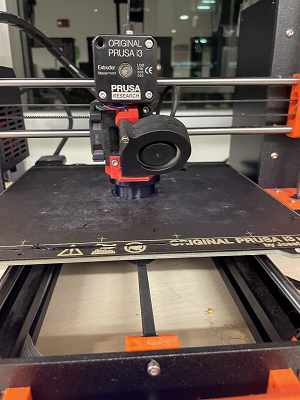
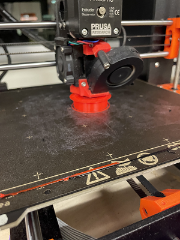

Final Project
Hello! For this final project, I'll be working with Braden Kane to complete a product using the machines we've trained with this semester.
This week we'll be using several machines to construct components for an edge-lit acrylic sign.
To start, Braden and I spent some time brainstorming an idea for a product we could construct.
We knew we wanted to make something related to video games because we live in a suite with five gamers.
Since Pokémon is one of Nintendo's best-selling franchises, and our suitemates have all played at least one Pokémon game, we decided to make something related to the Pokémon games.
At first, we thought about designing the "trainer cards," a franchise staple found in most Pokémon media.
In the Pokémon games, these trainer cards showcase your progress and achievements as you complete your playthrough.
Since every Wheaton student has an ID card, we figured we would replicate the trainer cards from Pokémon by laser-cutting a case to go around our Wheaton IDs.
The case would have comprised of two bodies:
One body to fit the card into and one body to hold the card in place.
These bodies would interlock using a simple stud mechanism, where the bottom body would fit into the top body.
However, we decided to print something using the PrusaSlicer machines, so we moved on to a different design.
Instead of laser-cutting a case, we specifically focused on each trainer card's "gym badges."
In the franchise, each region has "gym challenges" that the player must beat to finish the game.
After completing a gym challenge, the player receives a corresponding badge on their trainer ID.
Essentially, gym badges are medals that highlight your progress when playing Pokémon.
Our second design focused on 3D-printing the badges and displaying them in a case.
We took eight badges and planned a laser-cut display case to store them.
We decided to test the idea by taking one of the less-complicated badges and recreating it in Fusion 360.


We went further and designed one of the badges in Fusion360.
Since we planned on using the PrusaSlicer, we made the badge a solid color for a single print.


We even designed a two-tone version of the badge to print on the multi-color printers at Wheaton.
However, we decided to stay with the single-color version since most badge designs required too many colors.

After finishing the design, Braden and I printed a prototype badge.
We enjoyed the size and shape of our first version, but we both agreed that we needed a better way to display the badges.
We ditched the idea of a laser-cut box and started exploring ways to make rings.

We began a model that interlocks the badges using a simple 3D-printed ring.
This design would use a stud mechanism similar to our first design.
However, we realized that we still needed to incorporate a second machine alongside the PrusaSlicer.
We pivoted our idea of 3D-printing both the ring and the badge to incorporate the vinyl-cutter machine.
Instead of making multiple badge designs, we made a single ring that incorporates four separate pieces.

We based the top piece on LEGO's stud pieces, but we flattened the top surface for applying vinyl stickers.
Incorporating the stud piece would allow us to have multiple interchangeable tops for the rings.
We found the stud measurements online and started recreating them in Fusion360.
However, as we were wrapping up the stud design...

COVID-19 struck, so Braden and I had to work remotely :(
Braden had the stud file on his computer, and I had to wait for a COVID test, so it took quite a while before I could visit the lab to print the stud.
In the meantime, I took the opportunity to begin the sticker designs.

We decided to use these designs for the stickers, so I worked on making them ready for the vinyl-cutter.
I selected some of our favorite icons and isolated them using Photoshop.

Then I moved the file over to Illustrator and readied the icons for the vinyl-cutter.
(I also added a blank template)

Braden sent the stud file over for me to print.
I received a negative COVID test result shortly after, so I went to the lab to print the file.


I went to the lab printed our first version of the stud.
I used SLA and printed at draft speed, so the print quickly finished.


After successfully printing our first stud, we discussed our plans for connecting it to the ring.
Although we were pleased with the stud and badge icon designs, we weren't satisfied with our ring designs.
So, instead of connecting the stud to a ring, we decided to do more LEGO-inspired printing alongside the Pokémon themes.


I altered our ring design to include a LEGO branch piece, and Braden started converting the branch into Fusion360.
Braden sent the file over, and I went to print it at the lab.
I loaded the file into the PrusaSlicer software and selected the draft speed.


This fast speed resulted in a failed print, so I went back to the PrusaSlicer and reduced the speed.

The print failed again, so I once again reduced the speed.
I also changed the SLA color to green because Braden and I decided to use a red-green color scheme.

Despite reducing the speed, this print failed well into the process.
However, the print demonstrated that the branch interlocks with the stud piece.
After several attempts, I finally succeeded in printing the branch.



Shortly after that, I successfully printed another stud using red PLA.
I also used sandpaper to flatten the top completely.

Here are the two pieces side-by-side.